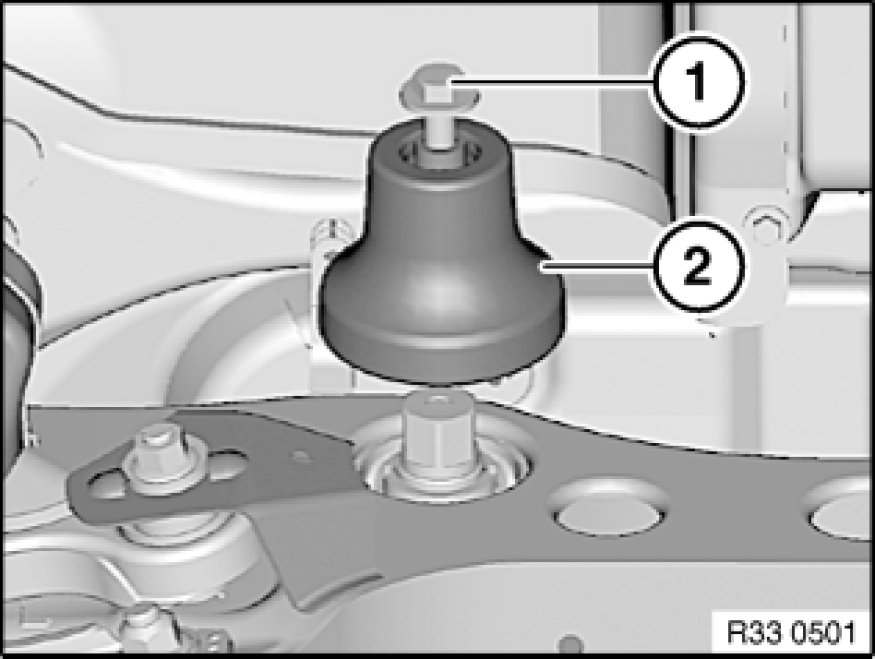
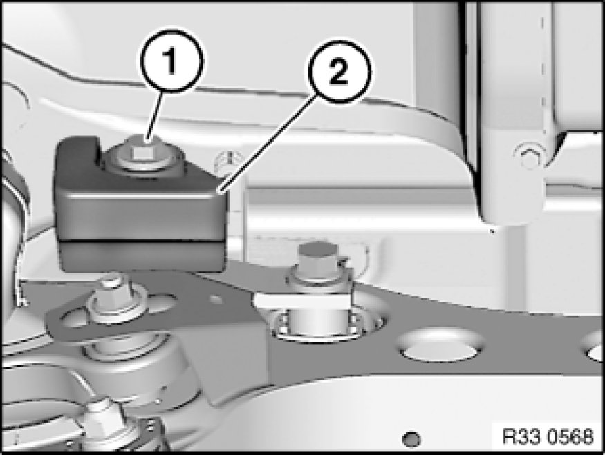
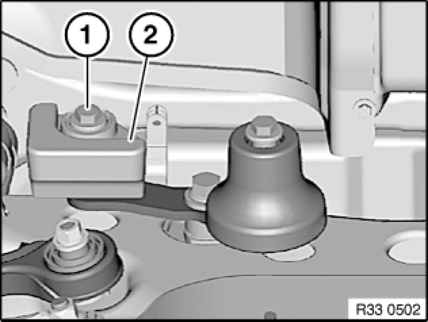
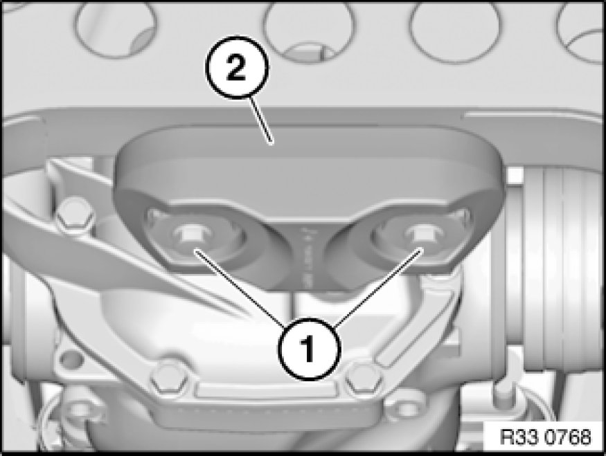

Vibration Damper: Service and Repair
33 10 ... - Removing and installing/replacing vibration damper

Variant A:
Release screw (1).
Tightening torque 33 17 2AZ Specifications.
Remove vibration damper (2).

Variant B:
Release bolt (1) and remove vibration damper (2).
Tightening torque 33 17 3AZ Specifications.

Variant C:
Note:
Removal depicted on left vibration damper.
Release bolt (1) and remove vibration damper (2).
Tightening torque 33 17 3AZ Specifications.

Variant D (E93):
Remove left and right tension struts (on rear axle).
Release bolts (1) and remove vibration damper (2).
Tightening torque 33 33 3AZ 33 33 Rear Axle Suspension.